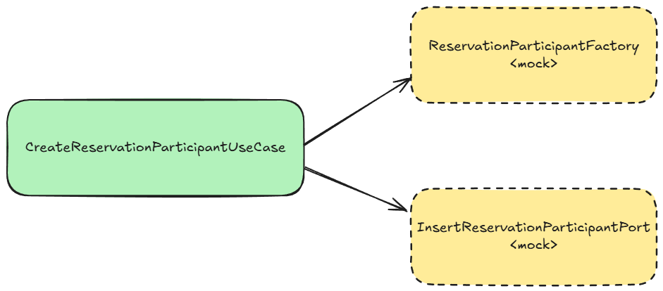

Unit tests
Unit tests form the foundation of the testing pyramid. They should constitute the majority of the tests in a project, as they are designed to be fast, stable, and inexpensive to run.
The term "unit" itself is quite vague and can be misleading—it doesn't refer solely to a single class or method, as is often assumed. A unit can be:
- A single class,
- A group of classes,
- A module,
- An aggregate (in the context of Domain-Driven Design, DDD).
However, the size of the unit is a secondary consideration. What matters most are the characteristics of unit tests, as summarized by the F.I.R.S.T. principle from Robert C. Martin's Clean Code book:
- Fast: Unit tests should execute quickly.
- Independent: They should not depend on each other; each test must be able to run in isolation.
- Repeatable: They should produce the same result every time they are run, regardless of the environment.
- Self-Validating: Tests should automatically determine whether they pass or fail, without requiring manual inspection—fortunately, this is standard practice nowadays.
- Timely: Tests should be written before the production code they verify, a key principle of Test-Driven Development (TDD). Even if you don't practice TDD, tests should still be written within the same time frame as the code they validate. Writing tests should not be postponed or moved to a separate task or ticket.
We can distinguish between two styles of unit tests: solitary and sociable, depending on how they handle the dependencies of the class under the test.
Solitary unit tests

def "Should create participant"() {
given: "Command of participant creation"
def command = new CreateReservationParticipantUseCase.Command(FIRST_NAME, LAST_NAME)
this.participantFactory.create(command) >> new ReservationParticipant(new ReservationParticipantIdentifier(GENERATED_IDENTIFIER), FIRST_NAME, LAST_NAME)
when: "Participant is created"
def identifier = createParticipantUseCase.create(command)
then: "Identifier is generated"
identifier.value() == GENERATED_IDENTIFIER
and: "Participant is inserted into repository"
1 * insertParticipantPort.insert(_ as ReservationParticipant) >> { ReservationParticipant participant ->
assert participant.identifier().value() == GENERATED_IDENTIFIER
assert participant.firstName() == FIRST_NAME
assert participant.surname() == LAST_NAME
return participant.identifier()
}
}
Solitary unit tests—also known as the mockist style - rely on mocking every dependency. The idea is to isolate the unit under test from its collaborators.
Advantages:
- Isolation: It is sometimes easier to mock a dependency and treat it as a black box.
- Easy to create: Easy to create but not always. For some classes like mappers it is hard to mock it.
Disadvantages:
- Maintenance overhead: Changing the code structure (e.g., refactoring) can break tests, increasing maintenance efforts.
- Mismatch risk: The mocked behavior might differ from real behavior, potentially hiding integration issues.
- Test proliferation: More tests are needed—often one per class—to cover all behaviors.
- Mock not fit to every type of class: Mocking some classes like mappers does not make sense, as logic of mapping would be repeated in tests.
Sociable unit tests

def "Should create participant"() {
given: "Command of participant creation"
def command = new CreateReservationParticipantUseCase.Command(FIRST_NAME, LAST_NAME)
when: "Participant is created"
def identifier = createParticipantUseCase.create(command)
then: "Identifier is generated"
identifier.value() == GENERATED_IDENTIFIER
and: "Participant is inserted into repository"
def participantByIdentifier = participantInMemoryAdapter.findBy(identifier)
participantByIdentifier.isPresent()
def participant = participantByIdentifier.get()
participant.firstName() == FIRST_NAME
participant.surname() == LAST_NAME
}
Sociable unit tests, sometimes referred to as the classicist style, do not rely on mocking dependencies. Instead, they use real implementations for components, or lightweight in-memory substitutes for external systems like databases. These tests are typically written against the public API of a module or a group of classes within a package.
Advantages:
- Realism: Tests are more realistic as they use actual implementations, revealing issues that might only surface in integrated environments.
- Robustness: Because they follow production-like interactions, changes in the internal code structure are less likely to break the tests. Only changes in the public API will cause test failures. Every other change that does not affect on a result of the method will not break the test.
- API-driven: Testing is centered around the public interface, which better reflects how the module is used.
- Reduced number of tests: Focusing on modules or groups of classes typically means fewer tests need to be maintained.
- BDD: Tests can be written in a behavior-driven development (BDD) style, making them more readable and understandable.
Disadvantages:
- Complex setup: Dependencies might have their own dependencies, resulting in complex configuration for the test environment.
- In-memory limitations: Creating in-memory implementations (for instance, for databases) can add overhead and may not perfectly replicate real-world behavior. Also, any changes in real database adapters will be need to be reflected in in-memory implementations.
When to use which style?
As is often said in IT, it depends. Due to its flexibility, sociable unit tests fit most scenarios. However, there are situations where solitary unit tests are more appropriate. In some cases, a mixed style can be employed—some dependencies can be mocked while others use real implementations.
A great talk by Sandro Mancuso on this topic is available here: Does TDD Really Lead to Good Design? (Sandro Mancuso).
When to use a mock and when to use a real implementation?
Here are some questions to help you decide whether to mock a dependency or use a real implementation:
-
Does the dependency belong to the class under test?
- If yes, use the real implementation. For example, strategies in the Strategy pattern belong solely to their client class, making mocking unnecessary.
- If not, mock it. Dependencies shared among multiple classes are better mocked. However, there are exceptions to this rule, such as utility classes, which should have their own tests but also should not be mocked in the unit under test.
-
Is the dependency a Domain-Driven Design (DDD) aggregate?
- Aggregates typically shouldn’t be mocked.
-
Will mocking the dependency require replicating logic?
- For example, mocking mappers often involves replicating mapping logic in tests. In such cases, use a real implementation. If a mapper is complex and depends on other services that require mocking, re-evaluate its design. Ideally, mappers should remain simple.
-
Does the dependency perform side effects?
- Database operations, REST API calls, or AMQP communication should not be part of unit tests; these are better suited for integration tests. In unit tests, mocks can be used, but in-memory implementations should also be considered. For example, database repositories can have their own in-memory test implementations instead of being mocked. This approach can significantly simplify tests. For operations like "fire and forget" messaging, simple mocks can be used without any negative impact.
One Test, One Behavior
It is crucial that each test verifies exactly one behavior.
This principle ensures that tests are focused, easy to understand, and maintainable.
A single test that checks multiple behaviors can lead to confusion, make debugging harder, and increase maintenance efforts.
The following test violates the principle by testing two behaviors at once:
def "Should create user and send welcome email"() {
given: "Command of user creation"
def command = new CreateUserUseCase.Command(FIRST_NAME, LAST_NAME, EMAIL)
and: "Mock email service"
emailService.sendWelcomeEmail(EMAIL) >> true
when: "User is created"
createUserUseCase.create(command)
then: "User is created"
1 * insertUserPort.insert(_ as User) >> { User user ->
assert user.identifier().value() == GENERATED_IDENTIFIER
assert user.firstName() == FIRST_NAME
assert user.surname() == LAST_NAME
assert user.email() == EMAIL
return user.identifier()
}
and: "Welcome email is sent"
1 * emailService.sendWelcomeEmail(EMAIL)
}
This test checks two behaviors: - User creation - Sending a welcome email
These are two independent behaviors that can change for different reasons. Combining them into a single test makes it harder to identify the cause of a failure and increases maintenance complexity.
Why is This Important?
- Clarity: Each test has a clear and singular purpose, making it easier to understand what is being verified.
- Debugging: When a test fails, it is immediately clear which behavior is broken, simplifying the debugging process.
- Maintainability: Focused tests are easier to update when the code changes, reducing the risk of unintended side effects.
By adhering to the "one test, one behavior" rule, you ensure that your tests remain robust and readable.
What is not worth to unit test
- Adapters for External Systems:
Components that interface with external services such as databases, HTTP APIs, or messaging systems should be tested through integration tests. These tests validate the communication with the real system or a close substitute. - Configuration Classes:
These classes usually contain no business logic. Integration often verifies their correctness or end-to-end tests where the actual configuration is used. - Simple Getters and Setters:
If these methods do nothing more than return or set a value, writing unit tests for them might not be worthwhile, unless additional logic is present.